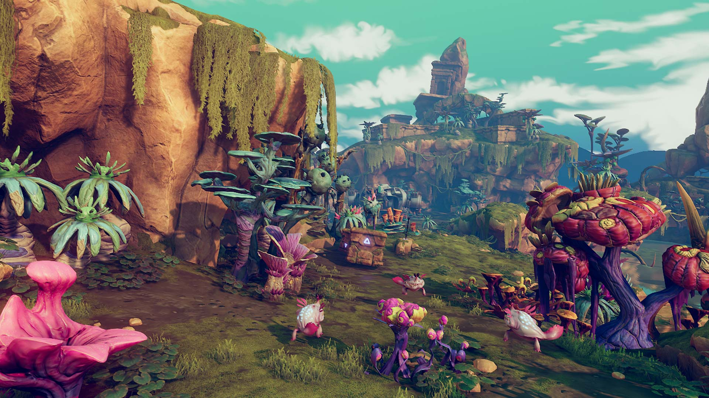
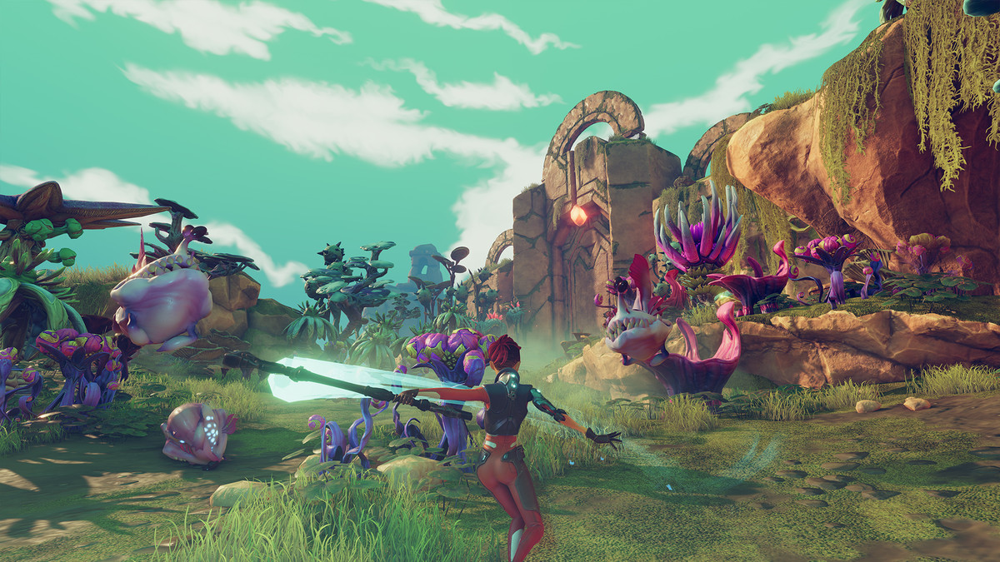
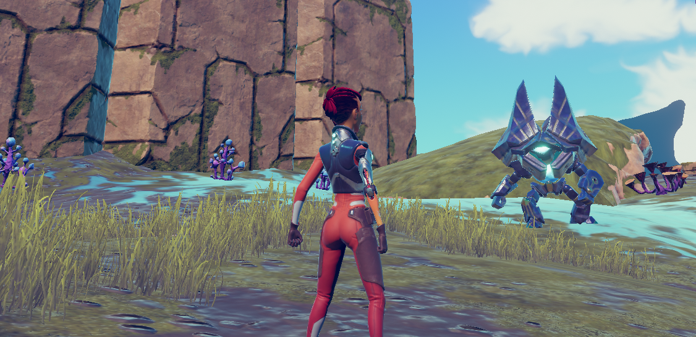
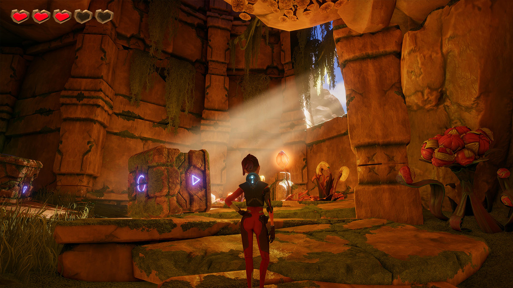
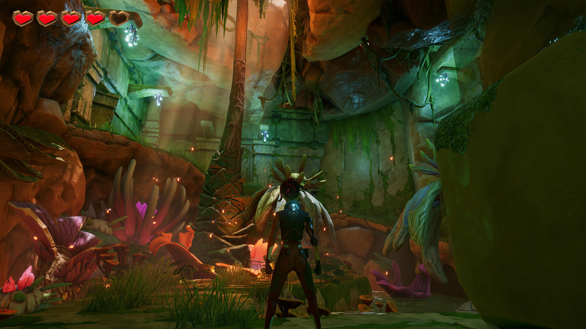
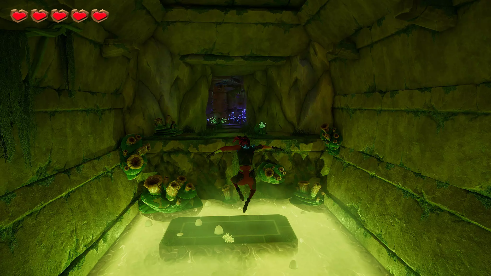

About the Game
This is an ongoing project. Set against a cosmic backdrop, the story follows a player whose spaceship crashes onto a mysterious planet due to a malfunction. What the player doesn’t know is that this planet is home to the fiercest aliens in the universe.
Gameplay Features
- Vast world for exploration
- Engaging storyline
- Scattered items to find and collect
- Repair your damaged spaceship
- Fend off alien attacks and execute strategic counterattacks
Game Visual

This image showcases the vibrant landscapes and challenging environments players will encounter in the game.
Game Environment
The game is set on a unique planet within the cosmos, drawing inspiration from the lush forests of Earth. Instead of traditional trees, we have created vibrant mushroom-like plants that add a fantastical element to the landscape. This environment encourages exploration and offers a rich backdrop for players to immerse themselves in the game's atmosphere.
Game Battle
As players venture through this expansive world, they will have the opportunity to discover various weapons that can be used for combat. In addition to these weapons, players will also have access to a range of simple yet effective skills that enhance their abilities in battle, allowing for a dynamic and engaging combat experience.
Game Enemy
Throughout the game, players will encounter a variety of monstrous creatures that are exceptionally fierce and dangerous. These enemies pose a significant threat, as they are capable of attacking and consuming humans, adding an element of urgency and challenge to the gameplay.
Game Scene : Caves
One of the key locations is a series of mysterious caves that players must navigate. These caves are not only visually striking but also require players to solve intricate puzzles to progress further, adding depth to the exploration experience.
Game Scene : Underground World
Another significant area is the underground world, which offers a completely different atmosphere and set of challenges. This hidden realm is filled with unique features and surprises that players can uncover as they explore its depths.
Game Scene : Sewers
The sewers present a treacherous environment characterized by numerous traps and toxic swamps. Players will need to utilize parkour skills to maneuver through these dangers effectively, creating an exhilarating gameplay experience that tests their agility and quick thinking.